В главе описываются средства конфигуратора, позволяющие поизводить групповую разработку конфигурации.
Разработка конфигурации авторским коллективом может производится последовательно, когда разработчики договариваются о модификации объектов конфигурации, производят изменения, а затем объединяют результат. Такой режим связан с риском случайного изменения других объектов, с необходимостью понимания всех процессов изменений и взаимосвязи объектов. Объединение конфигураций при этом должен производить специалист, хорошо представляющий направление разработки.
Снизить верояность ошибок, повысить производительность и упростить процесс разработки призван механизм групповой разработки конфигурации.
Под групповой разработкой понимается одновременная работа группы пользователей (разработчиков) по изменению конфигурации, при которой модификация объектов конфигурации доступна только тому разработчику, который предварительно захватил данный объект.
Для групповой разработки в общедоступном каталоге (общий сетевой ресурс) создаётся "Хранилище", в которое средствами конфигуратора помещается конфигурация. Для хранилища назначается администратор, который осуществляет формирование списка пользователей, имеющих доступ к хранилищу.
Администраторские права могут быть назанчены и другим пользователям.
При групповой разработке конфигурация рассматривается как набор объетов, закрытых для изменения. Чтобы произвести изменения в объекте, его нужно захватить. Одновременно объект может быть захвачен только одним пользователем. Пользователь может захватить произвольное число не захваченных другими пользователями объектов.
Приёмы работы с захваченными объектами конфигурации ничем не отличаются от приёмов работы в обычном режиме. Допускается редактирование свойств самого объекта, удаление и создание подчинённых объектов.
Для добавления объектов требуется, чтобы был захвачен объект, которому он подчинён. Например, для добавления константы необъходимо захватить корневой объект конфигурации. Для добавления реквизита или формы объекта - сам объект.
Для удаления незахваченного объекта требуется захватить сам объект, а также объект, которому он подчинен, и все подчиненные ему объекты.
После работы с захваченными объектами результат их модификации можно поместить в хранилище. С другой стороны, если какие-либо незахваченные объекты были изменены, то можно получить обновление даных объектов сразу после помещения этих объектов в хранилище конфигурации автором изменений.
Объекты конфигурации тесно взаимосвязаны друг с другом. Поэтому хранилище конфигурации поддерживает целостность метаданных при захвате или помещении объектов в хранилище.
Таким образом, механизм групповой разработки обеспечивает синхронизацию работы группы разработчиков по модификации конфигурации.
Хранилище конфигурации создаётся для разделения доступа к объектам конфигурации.
Для создания хранилища выберите пункт "Конфигурация - Хранилище конфигурации - Создать хранилище", рис. 1.
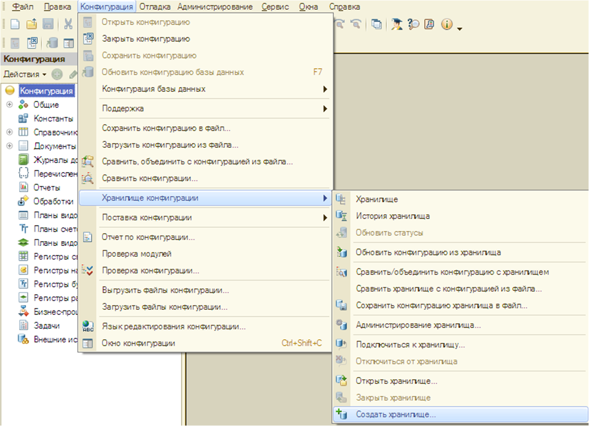
Рис. 1. Создание хранилища
На экран выводится диалог:
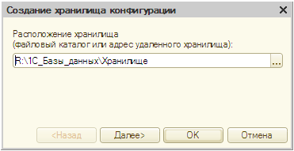
Рис. 2. Создание хранилища конфигурации
В поле "Каталог хранилища" укажите каталог расположения хранилища. По указанному каталогу не должно быть зарегистрировано другое хранилище конфигурации. Нажмите кнопку "Далее".
Укажите имя администратора хранилища и пароль доступа. Администатор хранилища производит формирование списка пользователей, имеющих право доступа в хранилище конфигурации, рис. 3
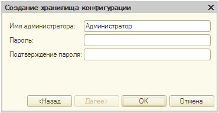
Рис. 3. Создание администратора хранилища
После нажатия клавиши "ОК" конфигуратор производит анализ данных, формирование структуры объектов и запись данных в казанный катало. Этот процесс может занять некоторое время (в зависимости от размера конфигурации). По окончании формирования хранилища конфигуратор предлагает пользователю подключить к хранилищу, рис. 4.
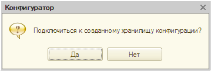
Рис. 4. Подключится к хранилищу?
Если по уазанному адресу (каталогу) зарегистрировано хранилище конфигурации, то конфигуратор выводит предупреждение о невозможности создания хранилища.
Для подключения к хранилищу конфигурации выберите пункт "Конфигурация - Хранилище конфигурации - Подключиться к хранилищу", рис. 5.
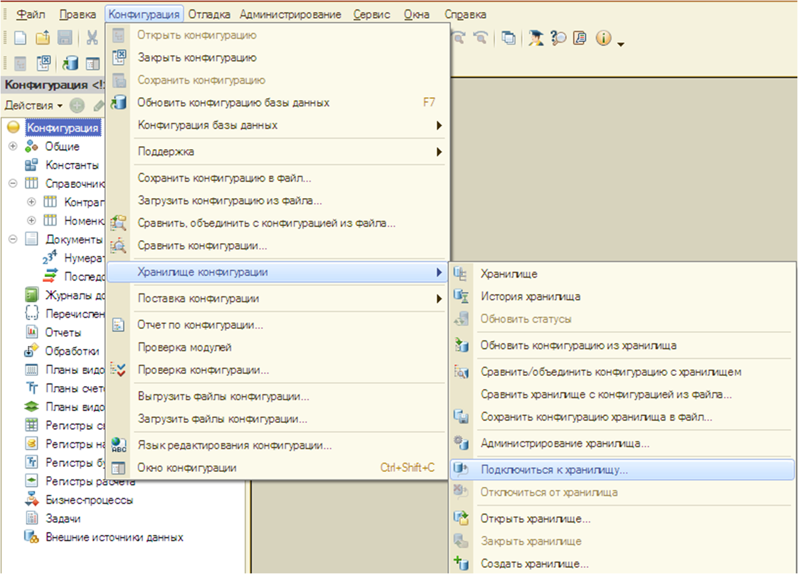
Рис. 5. Подключиться к хранилищу
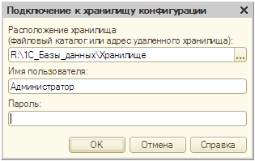
Рис. 6. Подключение к хранилищу конфигурации
Введите имя пользователя и пароль, если он задан.
Если под указанным именем никто не зарегистрирован, выводится предупреждение: "Ошибка аутентификации! Проверьте правильность введённого имени пользователя и пароля.".
Для каждого пользователя к данному хранилищу может быть подключена только одна конфигурация. Поэтому конфигуратор сначала производит проверку регистрации подлючения по данному пользователю.
"Первичное подключение к хранилищу". Если имя пользователя зарегистрировано и для этого пользователя информационная база ещё не была подключена к хранилищу кнфигураций, то производится подключение и устанавливается свзяь: в хранилище по данному пользователю записывается информация о конфигурации и её месте расположения.
Если конфигурация пользователя подлкючена и связь не изменялась, то выводится окно конфигурации и пользватель может начинать работу с объектами.
Если для данного пользователя в данный момент времени есть открытая конфигурация, связанная с указанным пользователем, то конфигуратор выводит предупреждение об аутентификации.
Если для данного пользователя в данный момент времени нет открытой информационной базы, но данные о месте расположения не совпадают с данными о связе (конфигурация расположена в другом каталоге, или подключение производится с другого рабочего места), то конфигуратор выводит сообщение: "Для данного пользователя уже имеется конфигуарция, связанная с данным хранилищем конфигурации. Продолжить?" Если нажать кнопку "Да", то происходит установка нового подключения, текущая конфигурация заменяется конфигурацией из хранилища и устанавливается новая связь текущей конфигурации с хранилищем для данного пользователя.
После подключения кофнигуратор выводит окно конфигурации, рис. 7.
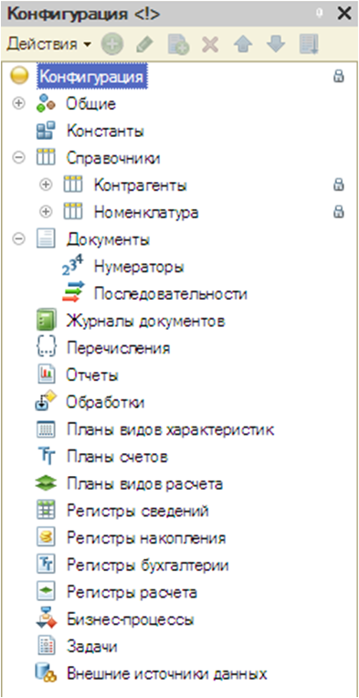
Рис. 7. Окно конфигурации
Состояние объектов конфигурации отображается специальными значками, размещёнными вдоль правой границы окна "Конфигурация". Значки объекта и подчинённого объекта отличаются размером (для подчинённого объектов они меньше) и видом (у подчинённых объектов присутсвует изображение ветви дерева).
При первом подключени конфигуратор запоминает параметры подключения (каталог хранилища, имя пользователя) для данной информационной базы. При очерёдном открытии конфигурации конфигуратор выводит запрос на соединение с хранилищем перед открытием окна "Конфигурация".
Если при подключении к хранилищу кофнигурации неправлиьно указано имя пользователя или пароль или указано имя пользователя, подключённого к данному хранилищу в данный момент времени, то выдаётся сообщение: "Ошибка аутентификации! Проверьте правильность введённого имени пользователя и пароля".
Если производится попытка подключения ранее не подключённой конфигурации к хранилищу конфигурации с указанием имени пользователя, для которого зарегистрировано подключение (установлена связь) к данному хранилищу, но для иной информационной базы (в данный момент не открытой), то конфигуратор выводит сообщение: "Для данного пользователя уже имеется конфигурация, связанная с данным хранилищем конфигурации. Продолжить?" При утвердительном ответе производится загрузка конфигурации из хранилища (текущая конфигурация полностью замещается и сохраняется на диске) и устанавливается новая свзяь информационной базы и хранилища. В этом случае прежняя связь будет утеряна (информационная база, которая была ранее подключена к хранилищу, уже не сможет соединиться с этим пользователем без переподключения).
Для администрирования хранилища конфигурации предназначено специальное окно, вызываемое пунктом меню "Конфигурация - Хранилище конфигураций - Администрирование хранилища.", рис. 8.
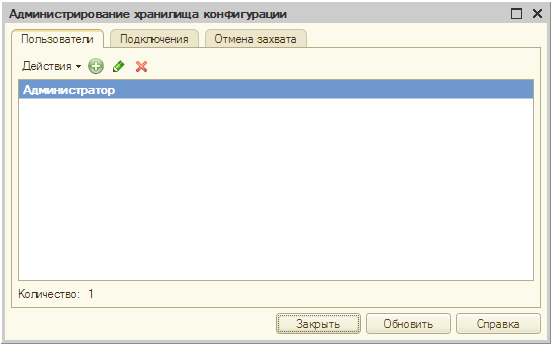
Рис. 8. Администрирование хранилища конфигурации
На закладке "Пользователи" расположены элементы управления списком пользователей - разработчиков конфигурации (далее в этой главе - пользователи). Всем пользователям доступен режим изменения собственных параметров (имя, пароль), кроме смены прав. Добавление, удаление и смена прав доступны только пользователям, имеющим административные права.
На закладке Подключение выводится список пользователей, подключённых к хранилищу, рис. 9.
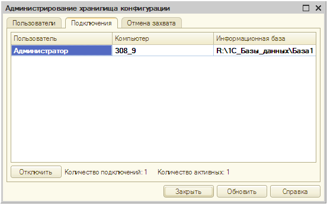
Рис. 9. Пользователи хранилища
С помощью кнопки "Отключить" можно отключить от хранилища любого из указанных пользователей, не работающих в данный момент с хранилищем. Данная кнопка доступна пользователям, имеющим административные права.
На закладке "Отмена захвата" производится отмена захвата объектов для указанного пользователя, рис. 10.
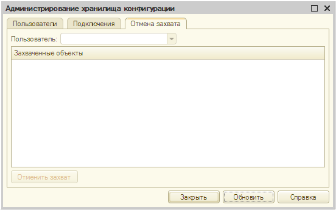
Рис. 10. Отмена захвата объектов
При этом пользователь, захвативший объекты, лишается возможности местить изменения этих объектов в хранилище. Данная кнопка доступна пользователям, имеющим административные права.
Для создания нового пользователя хранилища выберите пункт меню "Конфигурация - Хранилище конфигураций - Администрирование хранилища" и на закладке "Пользователи" выберите пункт "Действия - Добавить". На экран выводиться окно редактирования информации о пользователе. На закладке "Основные вводятся" наименование пользователя и пароль доступа к хранилищу, рис. 11.
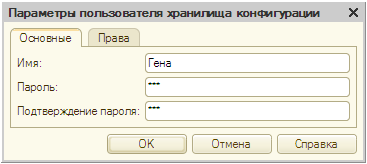
Рис. 11. Создание нового пользователя
На закладке "Права" указвается, какими правами обладает данный пользователь, рис. 12.
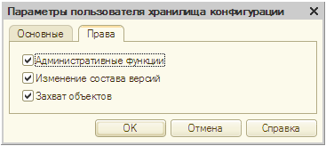
Рис. 12. Установка прав для пользователя
Административные функции - пользователи имеет права создания, удаления и отключения пользователей, отмены захвата.
Изменение состава версий - пользователь имеет права выполнения отката и сокращения версий.
Захват объектов - пользователям с данным правом доступны захват и внесение измерений в конфигуарцию хранилища. Если право не установлено, то объекты хранилища можно только просмотреть.
Захват, получение, помещение объектов в хранилище и другие действия с объектами хранилища удобнее выполнять в окне "Хранилище конфигурации". Для его открытия выберите пункт "Конфигурация - Хранилище кофнигурации - Хранилище", рис. 13.
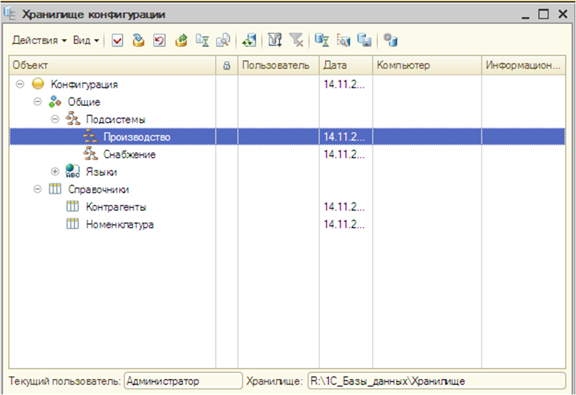
Рис. 13. Захват объектов конфигурации
Окно "Хранилище конфигурации" состоит из панели иструментов и табличного поля, в первой колонке которого показывается иерархическая структура объектов хранилища или список объектов в зависимости от режима просмотра (меню Вид).
Если режим показа удалённых объектов установлен (подменю Вид), то в списке удалённые объекты показываются более светлым шрифтом.
Во второй колонке пиктограммами показывается состояние захваченных объектов. Захваченные текущим пользователем объекты показываются приктограммой, содержащей красную галочку. В колонке "Пользователи" указывается пользователь захвативший объект. В колонке "Дата" показвается дата захвата (если объект на данный момент захвачен) или дата последнего обновления объекта. В колонке "Компьютер" указвается имя компьютера пользователя, а в колонке "Информационная база" - имя локального каталога информационной базы на компьюетры пользователя.
Для удобства работы с кофнигурацией можно настроить показ объектов в графе "Объект" окна "Хранилище конфигурации". Фильтр вызывается пунктом меню "Действия - Фильтр", рис. 14.
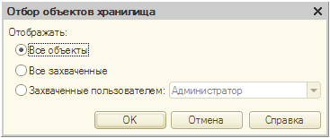
Рис. 14. Фильтр объектов хранилища
Смысл элементо управления понятен из их названия.
Захват объекта предназанчен для монопольного владения объектов хранилища с целью его редактирования. Захваченный объект для других пользователей становится недоступным для изменений (возможен только просмотр и получение изменённого объекта для использования).
Для захвата в окне "Хранилище конфигурации" укажите нужный объект (допускается множественный выбор и выполните команду "Действия - Захватить в хранилище...", рис. 15.
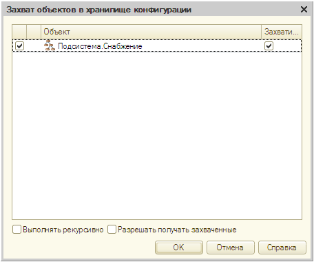
Рис. 15. Захват объекта в хранилище
Если объект связан с другим объектами, то в список будут также включены эти объекты. В этом случае выбранный объект показывается жирным шрифтом. Захват выбранного объекта возможен только в случае получения этих объектов из хранилища.
При этом в списке включаются также те объекты, которые не связаны непосредственно с выбранным объектом, а имеют косвенную связь.
Для получения этих объектов необходимо установить флажок в первой колонке списка. Если также требуется захватить объекты, то для них необходимо установить флажок в колонке "Захват". Если не все требуемые для захвата объекты отмечены для получения, конфигуратор выдаёт сообщение "Для выполнения операции требуется получение объектов" и перечисляет требуемые объекты. Захват в данном случае не производится.
ВАЖНО!!! Если флажок Получать захваченные установлен, изменения, сделанные в захваченных и повторно получаемых объектах, будут потеряны.
Для добавления новых объектов в конфигурацию нужно захватить родительский объект. Например, для создания нового справочника необходимо захватить корневой объект конфигурации; для создания новой формы или реквизита справочника - захватить сам объект - справочник.
Модифицированный объект можно поместить в хранилище, чтобы другие пользователи могли обновить этот объект в своих конфигурациях. Для этого выполните команду "Действия - Поместить в хранилище", рис. 16.
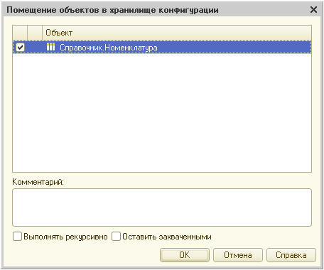
Рис. 16. Поместить объект в хранилище
Установите флажки для тех объектов, которые будут помещены в хранилище.
Для описания произведённых изменений введите их в многострочное поле "Комментарий". Этот текст можно просмотреть в истории хранилища.
Установите флажок "Выполнять рекурсивно", если объекты содержит подчинённые объекты и требуется их помещение в хранилище.
Установите флажок "Оставить захваченными", если требуется, чтобы указанные объекты оставались захваченными.
Если в хранилище помещаются объекты, связанные с другими объектами конфигурации, в диалог выводится полный список таких объектов.
Помимо этого объекта в список могут быть включены и другие объекты, связанные с данными объектом. В этом случае в списке объектов выбранный объект в хранилище без помещения (обновления) этих объектов нельзя.
Чтобы получить объекты, изменённые другими пользователями, в списке объектов хранилища укажите нужные объекты и выполните команду "Действия - Получить из хранилища", рис. 17.
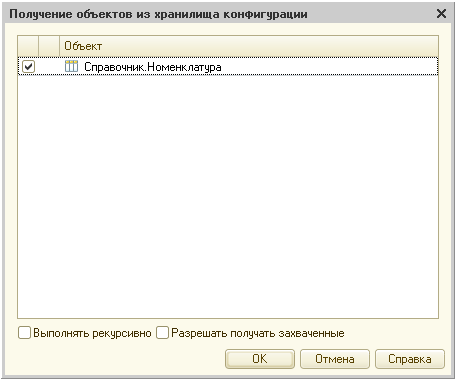
Рис. 17. Получение объектов из хранилища конфигурации
В строках списка объектов установите флажки для тех объектов, которые требуется получить из хранилища.
Установить флажок "Получать рекурсивно", если объекты содержит подчинённые объекты и требуется их получение.
Если выбранный объект уже захвачен, то установка флажка "Получить захваченные" приведёт к потере произведённых изменений в данном объекте. В этом случае производится восстановление данных объекта данными из хранилища.
Если не требуется сохранять произведённые в объекте хранилища изменения или нужно предоставить данный объект для модификации другому пользователю, данный объект можно отпустить. Для этого выполните команду "Действия - Отменить захват в хранилище...".
Во второй колонке списка пиктограмма показывает отличие объекта в конфигурации и хранилище. Если пиктограмма отсутствует, то объекты совпадают.
Установите флажок "Выполнять рекурсивно", если объекты содержат подчинённые объекты и требуется отмена их захвата.
После отмены захвата объекты будут получены из хранилища.
Для отключения от хранилища выберите пункт "Конифигурация - Хранилище конфигурации - Отключиться от хранилища".
Задание: Разработайте новую конфигурацию и поместите в неё элементы из таблицы 1. На основе этой конфигурации создайте хранилище, добавив в неё пользователей из таблицы 2.
Таблица 1
| Наименование | Описание |
|---|---|
| Контрагенты | Код (строка, 5), Наименование (строка 100) |
| Номенклатура | Код (число, 5), Наименование (50), Вес (3,2) Единица измерения (строка 4) |
Таблица 2
| Основные | Права |
|---|---|
| Имя: Иванов Иван Иванович Пароль: 123 Подтверждение пароля: 1 |
Права: Захват объектов |
| Имя: Генадий Гена Дмитриевич Пароль: 763 Подтверждение пароля: 763 |
Права: Захват объектов, Административные функции |